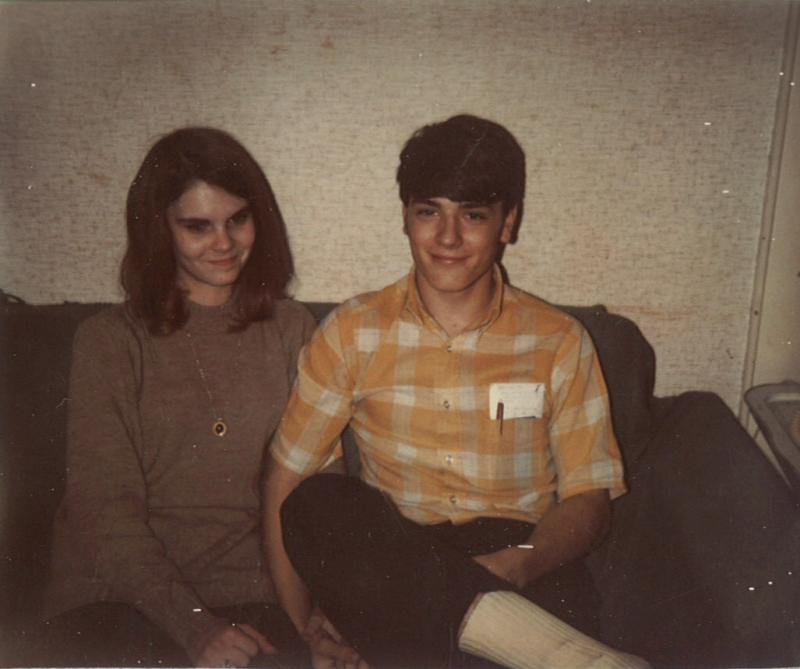
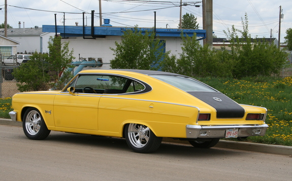
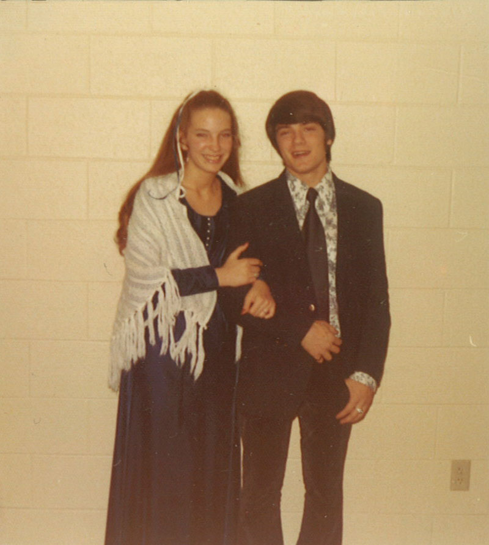

Martin Manley: My Life and Death
Born 8-15-53, Died 8-15-13 , Age 60
- Home Page
- January 1, 2012
- June 11, 2012
- Suicide Preface
- Why Suicide?
- Why not?
- Why Age 60?
- Self-Serving?
- Suicide - How 2
- Gun Control
- Other Suicides
- Other Quotes
- ------------------------------------
- Growing Up
- OMG: I look 60!
- Mom and Dad
- The Heavens
- My Religion
- Chancel Choir
- Victory O Lord
- The Proposal
- Two Marriages
- First Two Loves
- Pictures
- Trips and Travel
- Writing Fiction
- Music & Poetry
- Movies & TV
- Health
- Sleep Deprived
- Living Donor
- Food & Drink
- Creations
- Sports
- KC Star
- KC Tornado
- My IQ
- Synesthesia
- Poker
- Legal
- JOCO, Ks.
- U.S. Financial
- 911 & Conspiracies
- COOL STUFF
- Births & Deaths
First Two Loves
As I mentioned in "Growing Up" to the left, our family moved to western Kansas when I was 11 going on 12. We lived roughly nine miles north of a little town called Pawnee Rock which was about seven miles NE of Larned. My mom worked in Larned and eventually, so did my dad. As you can imagine, they had a few miles to drive every day.
My best friend was Charles and he lived near Larned and went to school there. We were friends because his dad and my dad worked together in Great Bend, but his dad was also the pastor of a small Christian Church that we went to in Pawnee Rock. Got all that?
From time to time as I got older, I would visit Charles and one late summer day while I was just about to enter my junior year at Pawnee Rock, Charles and I went to a church fellowship in Larned...
...My first love is named Lucinda Kay (Cindy).

Cindy was at this fellowship and it was the first time I had ever seen her. Both Charles and Cindy were a year older than I and in the same class at Larned - soon to be seniors. He decided he liked her. Near the end of evening, we gathered in a prayer circle. We were going to hold hands, so Charles quickly positioned himself next to Cindy. I was on his other side. The person running the meeting asked us to hold the hand of the person two people away from us! It meant I got hold Cindy’s hand and, as irony would have it, we held hands right in front of Charles... SUCKER! One thing led to another and I got the guts to ask her out.
I can't begin to tell you how much I fell head over heels, but then that's common, I suppose, for a first love.
Even at that tender age, there was conflict between what a girlfriend might fear about how I was seen by others versus my not caring much - if at all. I can remember two examples. Once we were at a motel restaurant. I don't recall many people there. We were in a booth and we both had tea to drink. I opened about six packets of sugar and dumped them in the tea and began stirring it. She freaked out - and I'm confident it wasn't concern over my health. In retrospect, I can't even begin to imagine why someone would care (or be embarrassed) by how many packs of sugar another person put in their tea. Of course, I'm sure I've embarrassed dozens (if not hundreds) of people I was with at various times in my life. I was oblivious to most of it, but even if I knew I was an embarrassment... I wouldn't have cared. I'm sure I thought, or would have thought, that was their problem, not mine.
On another occasion, Cindy and I traveled to Manhattan (about three hours from the sticks) for some college preparation thing. By this time, my friend Charles had a girlfriend named Beth. I met some friends I knew from summer camps in Manhattan and on two separate occasions that day for some inexplicable reason that I can't even begin to comprehend, I introduced Cindy as "Beth". Needless to say, she was at the minimum perplexed, and at the maximum... not happy.
On the way home from Manhattan, there are about 20 miles of hills before you get to the flat land that lasts all the way to the Rockies. Of course, there was no cruise control in those days, but I was going a consistent speed down I-70. However, as we went up and down the hills, we would pass a couple semis (tractor trailers) going up and they would pass us going down. After this happened a few times, Cindy started complaining that it was my driving - as if it mattered anyway. No doubt she was embarrassed. Although I liked all the mothers of my girlfriends and wives over the years, I really liked her mom because when we got back to Larned, she explained to Cindy that semis slowed down going up hills and sped up going down and that it wasn't my fault. It's amazing how you remember some things, but forget 99% of the rest.
I actually got my first traffic ticket on that same trip. We were driving on a four lane road with a median. I went through an intersection and looked down the cross roadway and saw some cars had been pulled over. I remember making the boastful and ignorant comment that I would never get a ticket as long as I lived. Within seconds, there was a highway patrolman on my tail with lights flashing. As it turns out, two perpendicular highways met at that intersection and it was a four-way stop. The patrolman couldn't understand how I could not have seen the signs. He indicated there had been several deaths there recently and asked if we would be willing to travel back to the intersection with him and drive through it so he could inquire about what we saw (or didn't see). So, we did. They had big stop signs, but as I recall, I was in the lane next to the median and a semi was ahead of me and to my right side. I think he began slowing for the stop sign, but it was hidden from me until I passed him. By that time, it was out of my peripheral vision. Nowadays, of course, you don't have intersections like that, you have clover leafs - or at the minimum, flashing red lights and a stop sign on the median. BTW: I was ticketed! I may be the only person in history to make the boast I would never be ticketed only to be ticketed within minutes.
And, while I'm talking about trips, the next summer we went to Wilson Reservoir which was about an hour north of us. We spent the day there and went out on a boat with some other people. The strange thing about it is that somehow I lost my billfold. I noticed it just as we were getting off the boat and immediately began looking for it. I had it before I got in the boat and I wasn’t in the water. Besides, I don’t know how it could have come out of my back pocket anyway. I never found it.
As it turns out, it’s the only billfold I ever lost, but more interesting that that, it was my first billfold and I only owned three others the rest of my life. My final billfold was one I had from the time I was 37. For years many people tried to buy billfolds for me, but I refused to use them. Consequently, they quit trying. I think I saw it as a symbol of cheapness - which I was/am proud of – all beat up and torn.
COOL FACTOID: Cindy had a 1966 Marlin. Few people today know what that was, but it was made by Rambler. It was yellow with a roof-wide black stripe down the back. What made it cool was that on the dashboard where it had the word "Marlin", she had crossed the "t".
Aw, shucks.
We dated until the beginning of my senior year and her freshman year of college. She went to a JUCO in Great Bend and it was one of the reasons I transferred to Great Bend my senior year. It was a great plan, but I didn’t count on her sprouting wings and wanting to fly. It wasn’t long before I had lost her to some college guy. It was beyond devastating. The night we broke up, I drove to Larned where my mom worked nights at Larned State Hospital. I hunted her down and I cried by ass off.
The single best thing I ever remember my mom and dad doing for me was they took me to Manhattan, Kansas the next day to see Charles at college. I got to see him and another friend from Larned that was also a year older. That helped immensely. It still took months to get over Cindy and to my last dying breath, she was always special to me.
“One's first love is always perfect until one meets one's second love.”
-- Elizabeth Aston
My second great love was when I was a sophomore in college. I met an incoming freshman girl named Elaine Kay (Lainie Kay) on the first day of school. It didn't take long before I was crazy in love with her. We dated all through my sophomore year.

The Christmas break was about three weeks long and that was an eternity for me because she went home to Scottsbluff, Nebraska and I stayed and worked in Aggieville. I had a few days off right around Christmas and there were some other kids that I knew who lived a couple hours away - in the direction of Scottsbluff - that were going home for a few days.
Scottsbluff is probably a 6-7 hour drive from Manhattan, Kansas. I had a car, but was too poor to pay for that much gas. Besides, the clunker I had might not make it there and back. So, I took off, riding with my friends early on Sunday, December 23rd. They dropped me off on the edge of their town and I started hitchiking - something you could still do in 1972.
I got a few more rides and about 9PM on Sunday, I made it to her house. She was shocked to see me, of course, but I got to meet her parents and stayed overnight in the family room. I spent most of the next day (Christmas Eve) with her and her family. Her dad asked me a question... "If John is 14 years older than Mary and John is 56, how old was Mary when John was twice her age?" I don't know why I remember the question except that when I answered "14" in about five seconds, he thought I was a genius. Elaine was a daddy's girl. If he thought I was a genius, then in her eyes, I was.
But, I wasn't part of the family and I had come uninvited and I had to get back to work in Manhattan. So, about 3PM on the 24th, Elaine took me out to the edge of Scottsbluff and we said our good-byes. It took a long time to get halfway across Nebraska. About 10PM, I made it to Grand Island and decided to take a bus. The last one of the night took me to Lincoln - which was about two hours north of Manhattan. By the time I got there, it was 1AM on Christmas Eve.
The bus station was deserted, but I found someone and asked them where the police department was. Fortunately, it was only a couple blocks away. So, I walked over there, asked them what they thought I should do. They said they would drive me to the edge of Lincoln, but that's all they could do. I'm not sure I wanted to be on the edge of Lincoln, Nebraska at 2AM on Christmas Eve, but that's where I found myself.
It was so cold, it was unbelievable - and there weren't any cars driving by - and even if there were, there wasn't any lighting where I was. They wouldn't see me until they had passed me and who is going to stop for someone or something at 2AM on Christmas Eve? I had a sleeping bag, so I just curled up in the ditch half frozen until sunlight.
I got up and started trying to thumb a ride. At least 50 cars went by without stopping. This was Christmas Day! I was shocked nobody would stop and I honestly thought I was going to die. Eventually, a couple in a VW picked me up. They were going to Manhattan and they dropped me off at my house.
Was it worth it? Who knows what I thought at the time? Today... of course not. But, I was 1) 19 years old, 2) an idiot and 3) in love. All three are recipes for disaster. Add them together and you get some kind of harmonic convergence - the perfect storm - a logrithmic explosion of hormones run amok.
One day in the spring, Elaine and I went to Tuttle Creek Reservoir just north of Manhattan for a picnic. We drove her car and parked up on a hill where there were picnic tables. However, we wanted to be closer to the lake, so we walked down to an area just above the water. About 10 minutes later, we heard a bunch of noise – crashing and sticks breaking. I could see through the trees her red Fiat making its way down the hill. At some point I lost sight of it, but I heard a louder bang and then a splash.
We raced over there and sure enough, Elaine’s car was floating in the lake. I immediately jumped into the water and grabbed it and tried to drag it to shore before it sank. Almost immediately, there was a boat pushing the car and a few other people were in the water helping me. We got it back to land, but the front quarter panel had been damaged. Still, it eventually drove again.
The mystery was that when the tow company came and hooked it up to a cable and tried to pull it up the hill, the car didn’t want to roll. It was only at that time that I unlocked it, got inside and disengaged the parking break so that the tires were free for it to be pulled up the hill. How it rolled down the hill with the parking break on or what got it started or how it missed all those trees in the first place is a complete unknown - although some other people at the picnic site on top of the hill said they saw kids hanging around it.
I don't really have any better place on this site to mention four-leaf clovers, so I'll tie it into Elaine. For some really strange reason, I've always been obsessive about looking for four-leaf clovers. When we were growing up in Topeka, we lived in a crackerbox house from ages 6-9. In the front yard, there were patches of clover. There must have been some sort of mutation going on because I remember finding tons of four-leaf clovers and many five-leafers, even a six or two. I can't trust my memory, but I think I may have even found a seven-leafer.
Maybe it was that experience which would result in my almost complete inability to walk by a clover patch and not stop and start looking. This stayed with me my entire life. When I used to ride my bike a lot on the trails in Johnson County, I would often stop, get off and start looking for four-leafers. It used to irritate my ex-wife (Teri) because she didn't have any interest except to keep biking.
Whenever I would walk through a park, I would stop and bend down and look. And, trust me, if I only had one talent in the world - it was identifying a four-leaf clover in the middle of a patch.
One summer day after my sophomore year of college, I was working construction and just walking along with another guy. Without breaking stride, I bent down and snagged a four leaf clover and showed it to him. He was absolutely amazed - even dumbfounded. I don't think he ever believed that I had just picked it and hadn't either had it in my hand or planned it before we were started walking.
That previous year when I was dating Elaine, I would go over to her dorm to pick her up. There were clover patches outside the dorm. In those days, you didn't go up to a female's room in a dorm and there were no coed dorms. There was a receptionist of sorts and I would ask her to tell Elaine I was there. While I waited, I would slip out the front door, look through the clover and pick a four-leafer. When she came down, I would hand her a four-leaf clover - kind of my signature way of greeting her. I did that many times and it sort of became a tradition.
Elaine and I dated throughout my sophomore year, but we broke up in the summer. I had driven her home after school to Scottsbluff and then was heading to the other side of Nebraska to Lincoln where I would work that summer. About a couple hours outside of Scottsbluff, I happened to notice a piece of paper on the floor of my car. I reached over and picked it up and it was some hand-written notes by Elaine - sort of a to-do list.
One of the things on the list was to talk to her older sister about me. She indicated she didn't love me and wanted to break up. OMG, I was shell-shocked. I stopped at the next town and got on a pay phone and called her. I asked her about it and she didn't deny it. I never knew if she intentionally left it there for me to find - hoping that would serve as the easy way out. We broke up on the phone. It was just about as hard on me as when Cindy and I broke up two years earlier.
Of course, I loved both of my ex-wives. I still do in a different way. But, the truth is that nobody who came after Cindy and Elaine could match how I felt about them. That's just the way it is when you are young. Everything is either perfect or it's the end of the world. Ultimately, it was both, but I survived as we all do.
Copyright 2013 Martin Manley Life and Death. All rights reserved.